Saskatchewan road signs and their meanings
All 123 signs from Chapter 4 of the Driver's Handbook, grouped the way the handbook groups them. When you know them, take the signs test.
- Basic sign shapes
- Regulatory signs
- Parking and pedestrian crossing signs
- Lane designation and turn control signs
- Warning signs
- Construction signs
- Railway crossings and crossroad delineators
- Guide signs
- Information signs
Basic sign shapes 6
-
StopThe red octagon is a STOP sign. Come to a full stop and proceed only when you are sure the way is clear.Handbook, p. 76
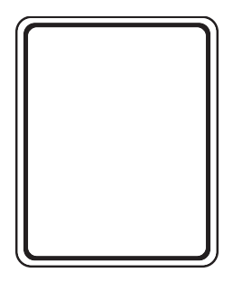
Regulatory sign shapeWhite rectangles or squares are regulatory signs. They state the law, such as speed limits, parking rules, and turning and passing movements.Handbook, p. 76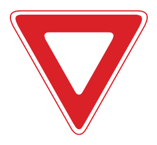
YieldA triangle with a red border is a Yield sign. Slow down approaching the intersection, give the right of way, and stop if other traffic is in or closely approaching the intersection.Handbook, p. 76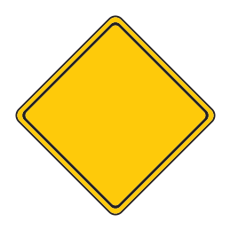
Warning sign shapeWarning signs are diamond shaped, yellow or orange with black letters or symbols. They warn of dangerous or unusual conditions ahead, such as a curve, turn, dip or side road.Handbook, p. 77-
Railway crossing (crossbuck)The crossbuck marks a railway crossing. The handbook says it has the same colour and meaning as a yield sign: give the right of way and stop if necessary.Handbook, p. 77
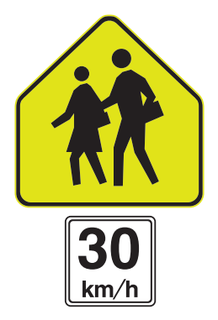
School zoneA pentagon with a fluorescent yellow-green background and children's silhouettes is a school zone sign. The tab underneath gives the speed to observe.Handbook, p. 77
Regulatory signs 19
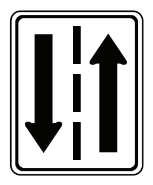
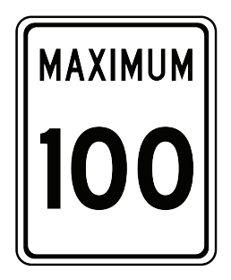
Maximum speed 100 km/h under ideal conditionsThe maximum speed allowed under ideal conditions. In bad weather you should drive slower.Handbook, p. 78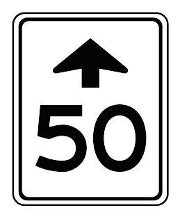
A lower maximum speed zone (50 km/h) is aheadThe arrow above the number is an advance warning: a lower maximum speed zone is ahead.Handbook, p. 78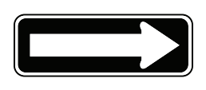
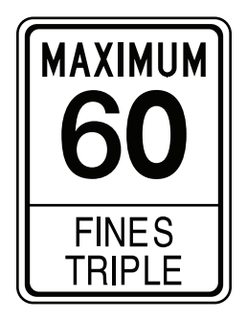
Fines triple for speeding past workers in this work zoneMaximum speed in a work zone. The speeding fine triples when you exceed the posted limit past workers (anyone within 3 km of a traffic control person, survey crew or highway workers sign).Handbook, p. 78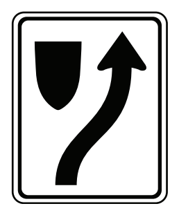
Keep to the right of the traffic island or obstructionA black shield on the left and an arrow passing it on the right: keep to the right of the traffic island or obstruction.Handbook, p. 78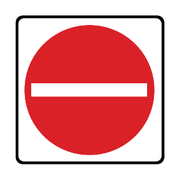
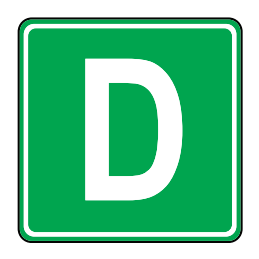
Over dimensional routeA green square with a white D marks a route for over dimensional vehicles.Handbook, p. 78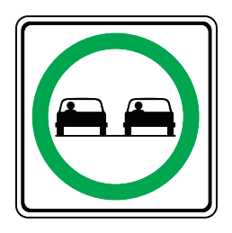
Passing permittedTwo cars in a green circle: passing is allowed. The same symbol in a crossed-out red circle prohibits passing.Handbook, p. 79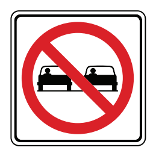
Passing not permittedA red crossed-out circle with two cars means passing is not permitted. The same symbol in a green circle means passing is permitted.Handbook, p. 79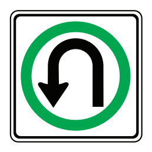
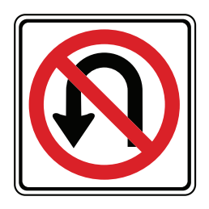
No U-turnNo U-turn: you must not turn your vehicle around on the roadway to travel in the opposite direction.Handbook, p. 79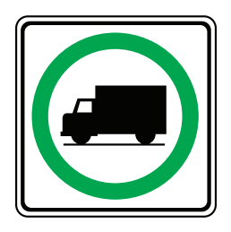
Heavy trucks should use this roadwayA truck in a green circle: heavy trucks should use this roadway.Handbook, p. 79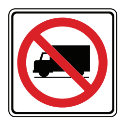
No heavy trucks on this roadwayA truck in a crossed-out red circle: heavy trucks are not allowed on this roadway.Handbook, p. 79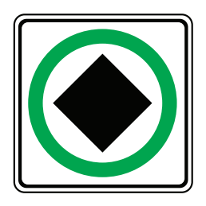
Dangerous goods routeA black diamond in a green circle marks the route that dangerous goods carriers should use.Handbook, p. 79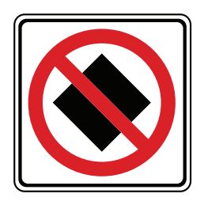
Dangerous goods carriers prohibitedThe black diamond stands for dangerous goods. In a green circle it marks a dangerous goods route; in a crossed-out red circle, dangerous goods carriers are prohibited.Handbook, p. 79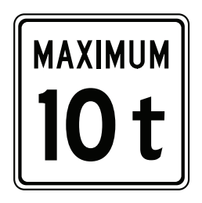
Weight limit for the highway or bridge, in tonnesThe “t” stands for tonnes. This is the vehicle weight limit permitted on the highway or bridge.Handbook, p. 79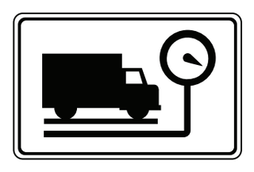
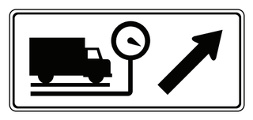
Truck inspection station exit (arrow shows the side)The arrow shows which side of the road the truck inspection station exit is on.Handbook, p. 79
Parking and pedestrian crossing signs 9
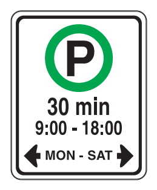
Parking allowed 30 min, 9:00–18:00, Mon–Sat, as indicatedA green P: parking is allowed for the time, hours and days shown, in the direction of the arrows.Handbook, p. 80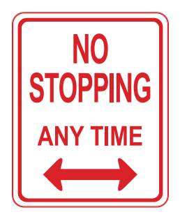
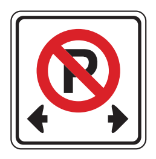
Parking prohibited as indicatedA crossed-out P in a red circle means parking is prohibited in the direction of the arrows.Handbook, p. 80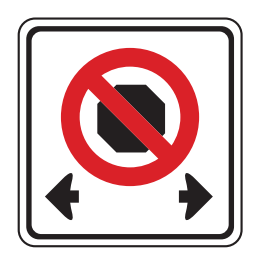
Stopping prohibited as indicatedA crossed-out stop symbol: stopping is prohibited in the direction of the arrows.Handbook, p. 80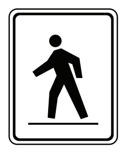
Pedestrian crosswalkThe new-style pedestrian crosswalk sign. The old style shows the word PEDESTRIAN and an X.Handbook, p. 80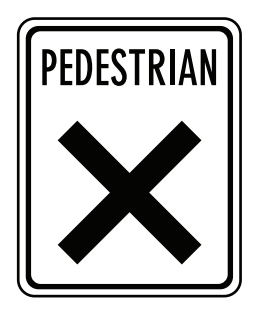
Pedestrian crosswalkThe old-style pedestrian crosswalk sign. The new style shows a walking figure.Handbook, p. 80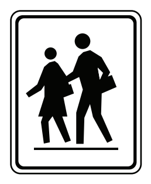
School crosswalkThe new-style school crosswalk sign with two children. The old style shows the word SCHOOL and an X.Handbook, p. 80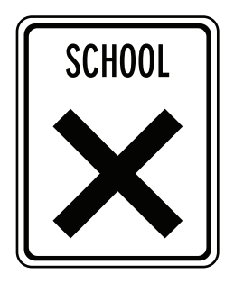
School crosswalkThe old-style school crosswalk sign. The new style shows two children.Handbook, p. 80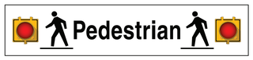
Stop when the lights are flashing, then proceed when safeAt a crosswalk with flashing lights, traffic must stop while the lights are flashing and proceed when it is safe.Handbook, p. 80
Lane designation and turn control signs 22
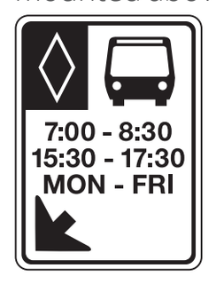
Bus lane during the times shownA diamond with a bus symbol marks a bus lane. The times and days show when the restriction applies.Handbook, p. 81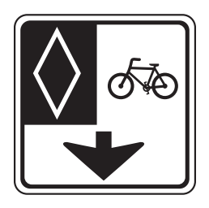
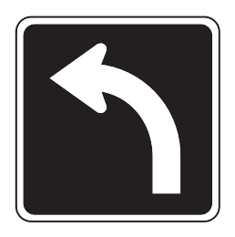
This lane must turn leftOverhead lane sign: traffic in this lane must turn left. Each overhead sign is centred over the lane it controls.Handbook, p. 81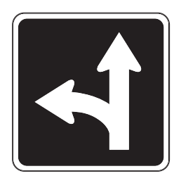
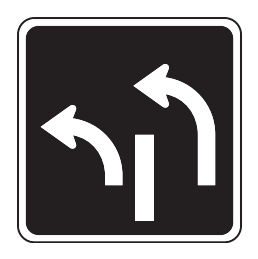
Two turning lanes leftTwo left arrows mean two left-turning lanes. Each overhead sign is centred over the lane it controls.Handbook, p. 81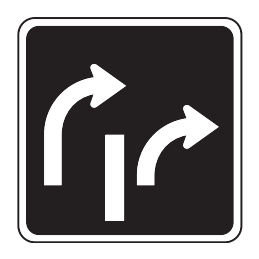
Two turning lanes rightTwo right arrows: two lanes turn right. From the outside (left) lane you may also turn right on red after stopping and yielding.Handbook, p. 81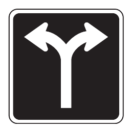
This lane left or rightFrom this lane you may turn left or right, but not go straight.Handbook, p. 81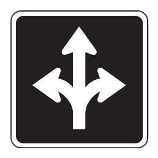
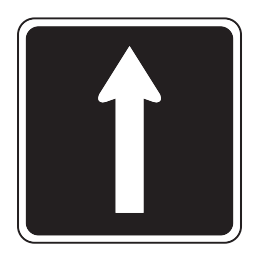
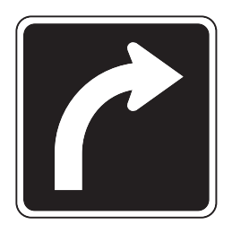
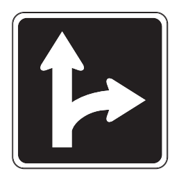
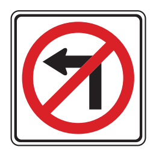
No left turnA left arrow in a crossed-out red circle. A tab underneath may show hours when it applies.Handbook, p. 82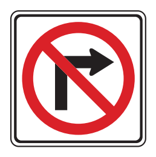
No right turnA right arrow in a crossed-out red circle. A tab underneath may show hours when it applies.Handbook, p. 82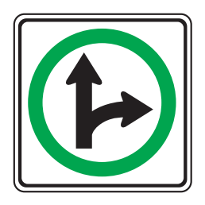
Go straight or turn right onlyA green circle shows the permitted movements: straight or right.Handbook, p. 82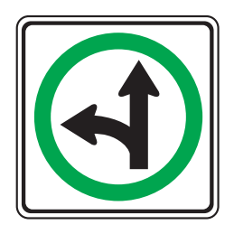
Go straight or turn left onlyA green circle shows permitted movements: straight through or a left turn only.Handbook, p. 82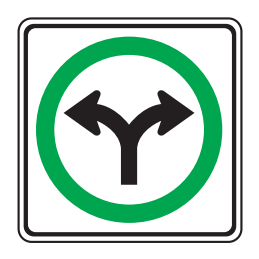
Turn right or left only (no straight through)You must turn right or left; going straight is not permitted.Handbook, p. 82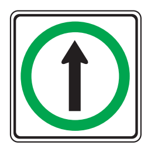
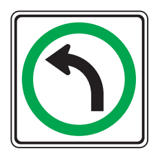
-
No right turn on red: wait for the green lightA crossed-out right arrow next to a red light: no right turn on red. Wait for the green light.Handbook, p. 82
-
Centre lane for left turns from both directionsThe centre lane is used by traffic from both directions to make left turns.Handbook, p. 82
-
Turning vehicles yield to bikesTurning vehicles must yield to cyclists travelling straight in their lane.Handbook, p. 82
Warning signs 39
-
Obstruction: pass to either sideThere is an obstruction ahead. You may pass on either side.Handbook, p. 83
-
Divided highway begins: keep to the rightArrows splitting around a median: a divided highway begins. Keep to the right.Handbook, p. 83
-
Section of roadway regularly crossed by deerThis section of roadway is regularly crossed by deer.Handbook, p. 83
-
Steep hill ahead: shift to a lower gear or slow downSteep hill ahead. On a very steep downgrade, shift to a lower gear or slow down.Handbook, p. 83
-
Speed is photo enforcedSpeed on this road is photo enforced. A current list of locations is at sgi.sk.ca/photo-speed-enforcement.Handbook, p. 83
-
Speed limit photo enforcedSpeed on this road is photo enforced. A current list of locations is at sgi.sk.ca/photo-speed-enforcement.Handbook, p. 83
-
Divided highway endsThe divided highway ends; traffic in both directions will share the road.Handbook, p. 83
-
Traffic signals ahead: be prepared to stopThere are traffic signals ahead. Be prepared to stop.Handbook, p. 83
-
Railway ahead: tracks cross the road at the angle shownA yellow diamond with rails means a railway is ahead, crossing the road at the angle shown. The crossing itself is marked with a crossbuck.Handbook, p. 83
-
Road narrows: the road ahead is not as wideThe road ahead is not as wide as the road you are driving on.Handbook, p. 84
-
Narrow bridge aheadThe width of the pavement on the bridge is narrower than the approach.Handbook, p. 84
-
Winding road ahead, first curve to the rightA winding road is ahead; the first curve is to the right.Handbook, p. 84
-
Reverse curve: two turns, first to the rightReverse curve: two turns in opposite directions separated by less than 120 m, first turn right. A winding road sign means three or more curves.Handbook, p. 84
-
Sharp curve right; 30 km/h is the recommended safe speedA sharp curve to the right is ahead. The tab shows the recommended safe speed.Handbook, p. 84
-
Underpass ahead: overhead clearance 3.8 mAn underpass is ahead. The overhead clearance is as shown.Handbook, p. 84
-
Concealed or hidden intersection aheadA road joins from the right and/or left at a hidden intersection ahead.Handbook, p. 84
-
Added lane: roads converge, no merging neededTwo roads converge, and merging movements are not required.Handbook, p. 84
-
Two lanes merge: traffic entering from the rightTraffic entering from the right merges into your lane.Handbook, p. 84
-
Pavement ends: gravel surface continuesThe pavement ends; the road continues with a gravel surface.Handbook, p. 85
-
Surface may be slippery at 0 °C: slow downThe bridge or roadway surface may be slippery at zero degrees Celsius. Slow down.Handbook, p. 85
-
T-intersection: road turns sharply right and leftThe road ends ahead at a T-intersection and turns sharply right and left.Handbook, p. 85
-
Playground aheadA playground is ahead. With a km/h tab underneath, that speed must be observed.Handbook, p. 85
-
School bus stop aheadA school bus stop is ahead. Stop for a bus with flashing lights.Handbook, p. 85
-
Chevrons guide drivers around a sharp curveChevron (arrowhead) signs are posted in groups to guide drivers around sharp curves.Handbook, p. 85
-
School crosswalk aheadA school crosswalk is ahead. Fluorescent yellow-green is used for school zone and school crosswalk ahead signs.Handbook, p. 85
-
Slow moving vehicle (under 40 km/h): slow downThe orange triangle with a red border is mounted on the rear of vehicles travelling under 40 km/h. Slow down when approaching from behind.Handbook, p. 85
-
Hazard at the road edge: pass on the side the lines slope down toMarks a hazard close to the edge of the road. The downward lines show the side on which you may safely pass.Handbook, p. 86
-
Over-dimension load or escort vehicleThis sign is placed on over-dimension loads or on escort vehicles.Handbook, p. 86
Construction signs 9
-
Traffic control person ahead: be prepared to stopAn orange sign with a figure holding a STOP/SLOW paddle: a traffic control person (flagperson) is ahead. Be prepared to stop for instructions. This sign also marks the start of a work zone.Handbook, p. 86
-
Survey crew aheadA survey crew is working ahead. This sign marks the start of a work zone.Handbook, p. 86
-
Highway workers aheadHighway workers ahead; it may have a WORKERS PRESENT tab. Slow to 60 km/h or less when passing a worker.Handbook, p. 86
-
Truck entrance: trucks entering, leaving or crossingMarks where trucks are entering, leaving or crossing the road.Handbook, p. 86
-
Be prepared to stop if your vehicle has a high loadThe orange OVERHEAD LINES sign: be prepared to stop if you are driving a vehicle with a high load.Handbook, p. 86
-
Construction ahead: be ready for speed limit changesYou are entering a construction zone. Drive with extra caution and be prepared for changes in the speed limit.Handbook, p. 86
-
Be prepared to stopTraffic ahead may be stopped in the construction zone. Be prepared to stop.Handbook, p. 87
-
Pavement drop-off: lane or shoulder is higher or lowerThe adjacent lane or shoulder (or both) is lower or higher than your travel lane.Handbook, p. 87
Railway crossings and crossroad delineators 2
-
Railway crossing with flashing lightsAt crossings without gates you may cross after stopping while the red lights flash, if it is safe. If a train is closely approaching or a signal person tells you to stop, you must wait. Never drive around lowered gates.Handbook, p. 88
-
Crossroad delineatorsThree delineators: provincial and public highways, community access roads, grid roads, major streets. Two: main farm access roads, improved all-weather roads, intermediate urban streets. One: all other minor rural roads and local streets.Handbook, p. 89
Guide signs 4
-
Numbered rural municipal route markerThe green sheaf marker identifies a numbered rural municipal route.Handbook, p. 89
-
Airport: the plane points toward the airportThe plane points in the direction of the airport.Handbook, p. 89
Information signs 13
-
Advance community sign with service tabsAnnounces a community ahead and the services available there.Handbook, p. 90